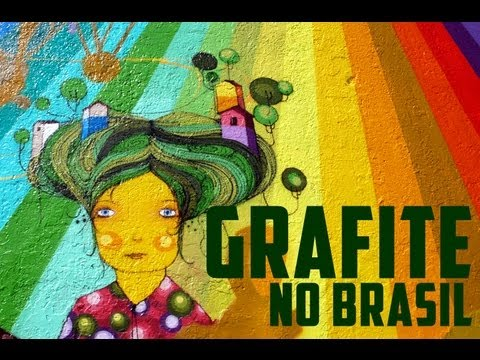

nosso projeto
Sabemos que muitas pessoas ainda não reconhecem o grafite como arte e o tratam de forma marginalizada,
também sabemos que o grafite é uma arte bem conhecida nas comunidades mais humildes pois por falta de uma
boa educação não chegam a ter um acesso adequado com outros tipos de arte, com isso queremos fazer com que o
grafite seja um refúgio para as crianças e jovens dessas comunidades humildes, e também queremos que o
grafite tenha mais reconhecimento e não seja taxado como crime, assim criamos nosso projeto para trazer essa
cultura para todos os tipos de pessoa.
história do grafite no brasil

O grafite teve origem em Nova York e foi introduzido no Brasil no final da década de 1970,em formato de
Stencil foi trazido pelo Artista Alex Vallauri um etíope radicado no Brasil.
O Grafite começou em São Paulo e é a forma de expressar toda a opressão que a humanidade vive,
principalmente os
menos favorecidos, ou seja, o grafite reflete a realidade das ruas. Os brasileiros não se
contentaram com o grafite norte-americano, então começaram a incrementar a arte com um
toque brasileiro. O estilo do grafite brasileiro é reconhecido entre os melhores de todo o
mundo.
tipos de grafite
Tag é a assinatura do grafiteiro. A tag é o nome ou apelido escolhido pelo artista, que aparece próximo da
arte no muro , normalmente feita com poucas letras e em formato de pixo,cada um com sua forma cor e estilo
diferende para dar autenticidade ao grafiteiro.

Tag
O stencil é o grafite feito através de um molde. Esse molde é recortado em algum material rígido, e quando colocado no muro e passando o spray por cima, quando o molde é retirado o desenho fica na parede. Esse estilo é mais rápido de
fazer e pode ser encontrado repetidas vezes em repetidos lugares.
O nome diz muita coisa, são aqueles grafites que dão a impressão de que estão saindo da parede, essa
impressão se da por conta das sombras que dão essa profundidade para obra e por isso é considerado um dos
estilos mais difíceis do grafite e que tem mais reconhecimento dentro e fora do país.
O estilo nasceu em Nova York nos anos 70 e domina os muros até os dias de hoje. Um Grafite composto por
letras, setas e muitos detalhes, normalmente um grafite bem colorido e tem a característica de ser quase
indecifrável sem alguma ajuda do artista.
Grafite que usa mais letras, e feito rapidamente. Thrown Up quer dizer "vômito" em inglês, o que pode
dar uma noção melhor da forma como eles são feitos.Já o bombing são as letras mais arredondadas e bem
próximas do Thrown Up com a diferença de serem mais detalhados e coloridos.

Bombing/Thrown Up
 cadastrar
cadastrar